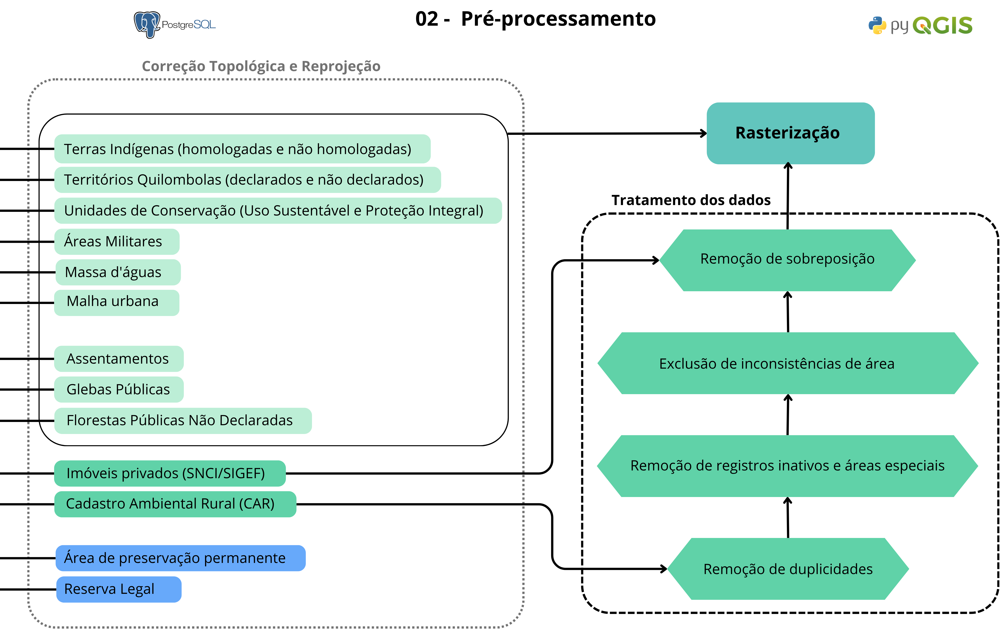

02. Pré-processamento dos dados
Nesta etapa, os dados integrados no banco PostgreSQL passam por correções geométricas e filtragens, com o objetivo de garantir consistência espacial, integridade das feições e confiabilidade nos processos subsequentes.
Como Funciona
- Correção Topológica e Reprojeção: São eliminadas inconsistências geométricas e todas as camadas são reprojetadas para um sistema métrico padrão (ESRI:102033 — Albers Equal Area Conic).
- Remoção de duplicidades: Registros duplicados são identificados e removidos, mantendo-se o registro mais recente
- Remoção de registros inativos e áreas especiais: São excluídos imóveis com status “Cancelado” ou “Suspenso”, bem como categorias que possuem representação mais confiável em outras bases oficiais, como áreas especiais.
- Exclusão de inconsistências de área: Imóveis do CAR com área igual ou superior à área do município são removidos, evitando distorções associadas à grilagem digital.
- Remoção de sobreposição: Sobreposições são resolvidas por meio da priorização do registro mais recente e do ajuste espacial em relação às bases do INCRA (SIGEF/SNCI) e CAR. Pequenas propriedades são priorizadas em relação às grandes, com recorte das feições.
- Rasterização: Todas as camadas são convertidas para formato raster com Pixel de 10 metros, compatível com escala 1:25.000, permitindo a padronização espacial e a aplicação das etapas seguintes de análise.
Fluxograma

Figura 2 - Fluxograma de Pré-processamento
Exemplo de inconsistências de área

Figura 3 - Exemplo de inconsistências de área